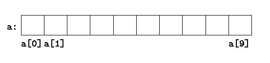

The C Programming Language
My Background


C's Background
"hello, world"

#include <stdio.h>
int main() {
printf("hello, world\n");
}
#include <stdio.h>
int main() {
printf("hello, world\n");
}
Types
- char
- int
- float
- double
- long
- short
- long long
- long double
- unsigned int
- unsigned long long
int main() {
int int_number;
int_number = 2000000000;
printf("int_number: %d\n", int_number);
int_number = int_number + 2000000000;
printf("int_number after adding: %d\n", int_number);
}
Arrays

int numbers[10], i;
for (i = 0; i < 10; i++) {
numbers[i] = i * i;
}
for (i = 0; i < 10; i++) {
printf("numbers[%d]: %d\n", i, numbers[i]);
}
printf("%d\n", numbers[10]);
Segmentation fault: 11
printf("%d\n", numbers[999999]);
Strings

char string[10];
scanf("%s", string);
printf("string: %d\n", number);
int number;
scanf("%d\n", &number);
printf("number: %d\n", number);
Pointers
int number;
number = 55;
int *pointer_to_number;
pointer_to_number = &number;
TDD in C
Resources
Nick Parlante
James Aspnes
Brian W. Kernighan & Dennis M. Richie
Dennis M. Richie
Takeaways
- C is not impossible...
- ... but it is hard
- C is still abstract...
- ... but is very 'close to the metal'
- C is dangerous ...
- ... so we have Rust and Go
- C is the origin of all thigs ...
- ... apart from Lisp